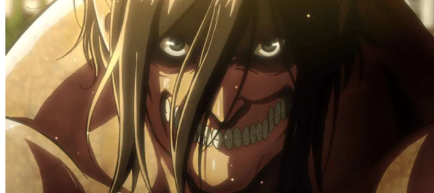
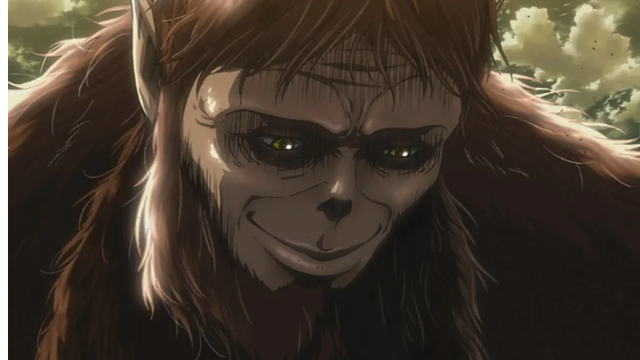

Os Titãs Originais
Os titãs de Attack on Titan (Shingeki no Kyojin) são tão fascinantes quanto assustadores. E, como você bem sabe, nem todos são igualmente irracionais ou possuem força aproximada. Há nove titãs particularmente poderosos que são fundamentais para este universo e se diferem completamente dos outros. Ao longo das três temporadas existentes do anime, espectadores já se depararam com muitos dos nove titãs originais. Alguns exemplos incluem o Titã Bestial, o Colossal e o Blindado — que deram muito trabalho para Eren, Mikasa e os demais. Abaixo, trouxemos uma breve explicação dos poderes de cada um dos nove titãs originais, que surgiram após a morte de Ymir Fritz, a primeira pessoa a despertar o poder de um titã.
Titã Fundador
Ligado a todos os outros titãs, o Titã Fundador consegue controlar as mentes das demais criaturas. Ele não apenas consegue forçar outros titãs a realizarem ações específicas como também alterar as memórias deles — mas, em tese, isso só é possível quando o humano que o domina é de sangue real ou está em contato com um titã de sangue real.
Titã de Ataque
Sempre pronto para o combate, o Titã de Ataque talvez esteja entre os mais simples quando capacidades físicas são o assunto. Contudo, o humano que o controla tem acesso às memórias de outras pessoas que o controlaram ou controlarão (sim, no futuro mesmo!). Como você já sabe, este é o Titã de Eren no anime, atualmente.
Titã Colossal
Mais alto do que quase todos os outros titãs, o Titã Colossal marcou presença nos primeiros episódios do anime. Atualmente, é o titã que reside no corpo de Armin Arlert. Os poderes dele incluem emitir uma fumaça extremamente quente e ter uma força bruta descomunal.
Titã Fêmea
Sob o controle de Annie Leonhart, a Titã Fêmea aterrorizou muitos dos seres humanos de Attack on Titan, mas acabou sendo derrotada por Mikasa e Eren (transformado em titã, é claro). Além de todos os atributos físicos tradicionais dos titãs, a Titã Fêmea consegue copiar habilidades de outras criaturas consumindo pedaços dos corpos delas.
Titã Blindado

Reiner Braun é um dos principais antagonista de Attack on Titan pela perspectiva do povo de Paradis. O personagem herdou os poderes do Titã Blindado aos dez anos e age como um guerreiro desde então. Além de possuir o corpo cheio de áreas com uma proteção extremamente reforçada, o Titã Blindado pode transformar parte das mãos em garras para escalar e lutar.
Titã Bestial
Mais animalesco do que todos os outros titãs, o Titã Bestial se assemelha a diferentes animais dependendo de quem o conquista. As habilidades dele incluem falar como um ser humano mesmo transformado, arremessar objetos com um precisão absurda e endurecer a própria carne. Atualmente, está sob o controle de Zeke Yeager.
Titã Mandíbula
Controlado atualmente por Ymir, no anime, o Titã Mandíbula é menor do que os demais. Contudo, trata-se de uma criatura muito mais rápida, com dentes afiados e garras capazes de quebrar praticamente qualquer coisa.
Titã Carroceiro

Controlado por Pieck Finger, o Titã da Carroça não está entre os mais perigosos quando sozinho, mas pode fazer muita diferença ao servir como suporte para aliados. Ele salvou o Bestial quando Levi quase o matou e também pode servir para transportar muitas outras coisas, além de pessoas derrotadas.
Titã Martelo de Guerra
Com exceção do Titã Fundador, que já foi citado no anime mas ainda não participou ativamente de qualquer batalha ou sequer está em um humano, o Titã Martelo de Guerra é o único desta lista que vai aparecer pela primeira vez na quarta temporada. Os poderes dele incluem transformar o próprio corpo em diversas armas e ser controlado à distância pelo usuário em casos nos quais é mais inteligente estar longe da criatura.